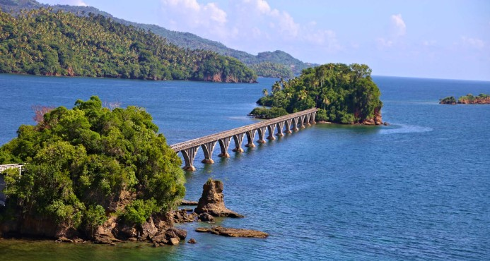

Bahia de Samaná
La Bahía de Samaná es una bahía en el este de República Dominicana. El río Yuna, uno de los más importantes en la isla La Española, desemboca en la Bahía de Samaná. Al sur se encuentra la ciudad de Santa Bárbara de Samaná y la Península Samaná. 
Entre sus atractivos están las islas que sirven como sitios de anidación de pelícanos y fragatas, cuevas con pictografías precolombinas y petroglifos y afluentes de los ríos y manglares protegidos. En el invierno, la Bahía de Samaná se enriquece con la visita de las Ballenas Jorobadas, que paren en la bahía.
Junto a la bahía está el Parque Nacional Los Haitises, que es popular por sus cuevas con pictografías y petroglifos de origen Taíno, sus diversidad de aves, sus manglares, islas e islotes (Los Haitises fueron declarado reserva de la biosfera por la UNESCO). También, la Bahía de Samaná forma parte del Santuario de Mamíferos Marinos de la República Dominicana, con en propósito de proteger a las ballenas y los delfines que visitan sus aguas. Cada año, más de 50.000 turistas visitan la Bahía de Samaná solo para avistar ballenas jorobadas, lo cual convierte a la bahía en una de las zonas naturales, turísticas y económicas más importante para la República Dominicana.